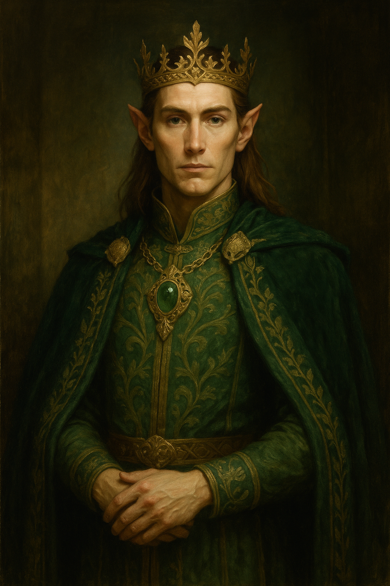
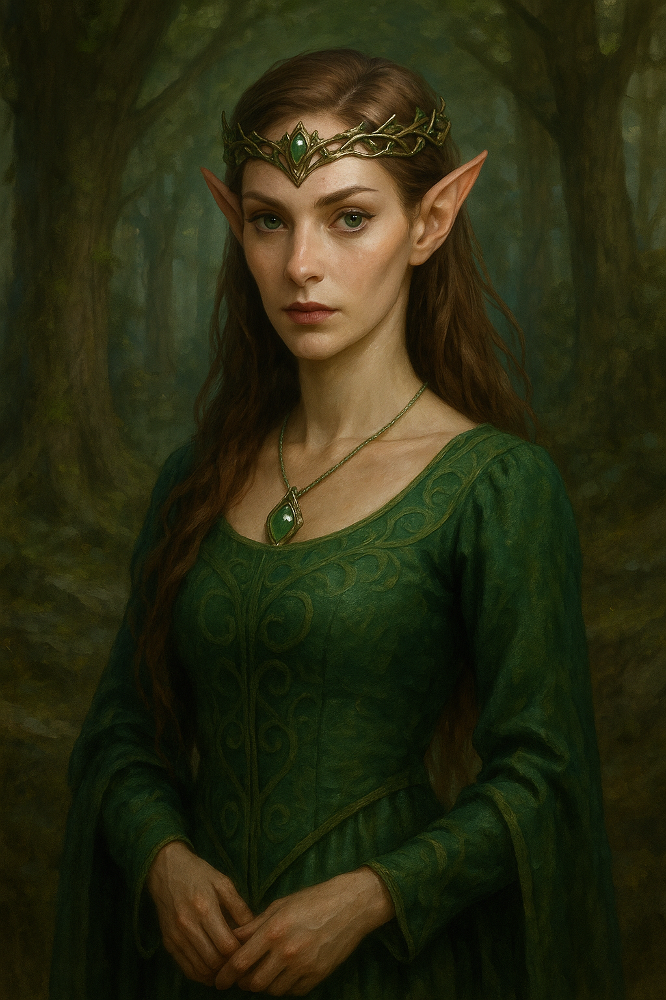
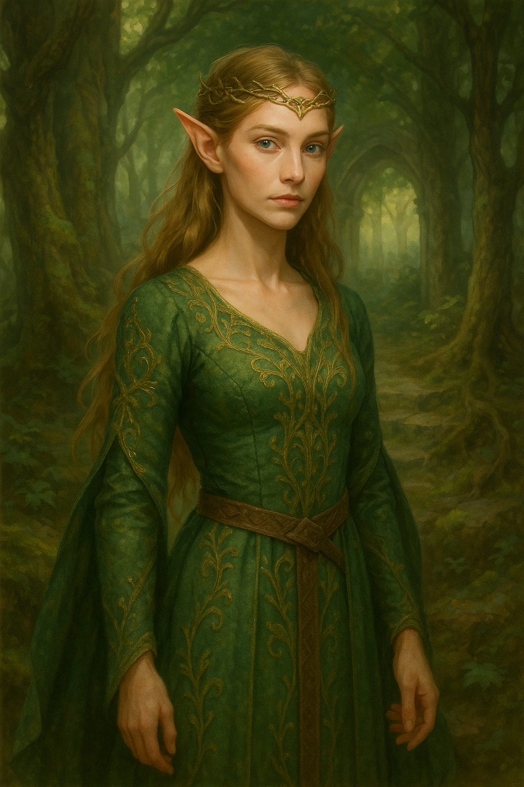

The First Lightbearers
When the Astral Drakes sang the world into being and bound it with the Concord of Flame, not all their echoes faded into silence. From the lingering resonance of their breath—light refracted through dream, sorrow, and starlight—the Elves were born. They were not shaped of clay nor carved from bone, but coaxed forth from the songlines that stitched the cosmos together. Where Vorthyx’s fire kissed the dew of Mirellan’s tears, groves shimmered with golden leaves that never withered. It was in one such grove, deep within the cradle of the Worldroot Tree, that the First Elves emerged—figures of luminescence and grace, listening before they ever spoke.
Children of Resonance
Elves were made as echoes of harmony, vessels through which the universe might remember itself. Their blood carries the rhythm of elemental balance, and their souls are threaded with strands of the Astral Drakes' breath. Each elf, it is said, is born under the gaze of a slumbering Brood, and to this day, their lifepaths are subtly nudged by celestial tides. Unlike mortals, Elves do not age as time intends. They bloom slowly—attuned to the seasons not as clocks, but as symphonies. Some believe this is because their spirits are still partially entangled in the Dreaming Veil, the plane from which Nyxael once watched dying stars.
The Moonbond
In the age after the Sundering, when the Drakes withdrew into myth, the Elves were left as stewards of balance. It was the moon, twin-faced and weeping silver, that offered them counsel. According to the Moonbond Rite—performed under lunar eclipses—an elf may open their memory to lifetimes forgotten, some of which are not their own. These visions often come in riddles, sometimes in prophecy, and rarely without cost. Some Moonbonded Elves have gone mad, their minds stretched across too many dreams. Others have become revered as Seers or Navigants—guides between this world and the whispering veil beyond.
The Autumn Betrayal
Though born of harmony, even Elves have shadows. During the Age of Falling Stars, a schism tore their kin apart. A conclave of Elves—tempted by Vehlrix’s echoes of power—sought to unmake the balance and forge their own dominion. They severed their songlines, hardened their hearts with iron will, and became known as the Ashenborn. The Autumn Betrayal, as it came to be known, saw leaves fall and never rise again. Groves turned to cinder, rivers forgot their names, and the Worldroot Tree lost one of its seven limbs. The Ashenborn vanished into the Umbral Paths, where light itself refuses to tread, and their descendants are now spoken of only in warnings and nightmares.
Legacy of the Starborne
Even now, in dwindling glades and mist-veiled towers, Elven voices still rise in harmony. They speak the secret names of wind, soothe broken earth, and chart the stars with reverence. When comets streak the heavens, some kneel and whisper old prayers, believing their draconic ancestors might still be listening. A few among them still quest for the Concord of Flame—hidden, perhaps, in a forgotten glyph, a phoenix-feathered relic, or in the soul of one who dares dream beyond destiny. For should the Drakes stir once more, the Elves will be the first to hear their call… and the last to forget their silence.